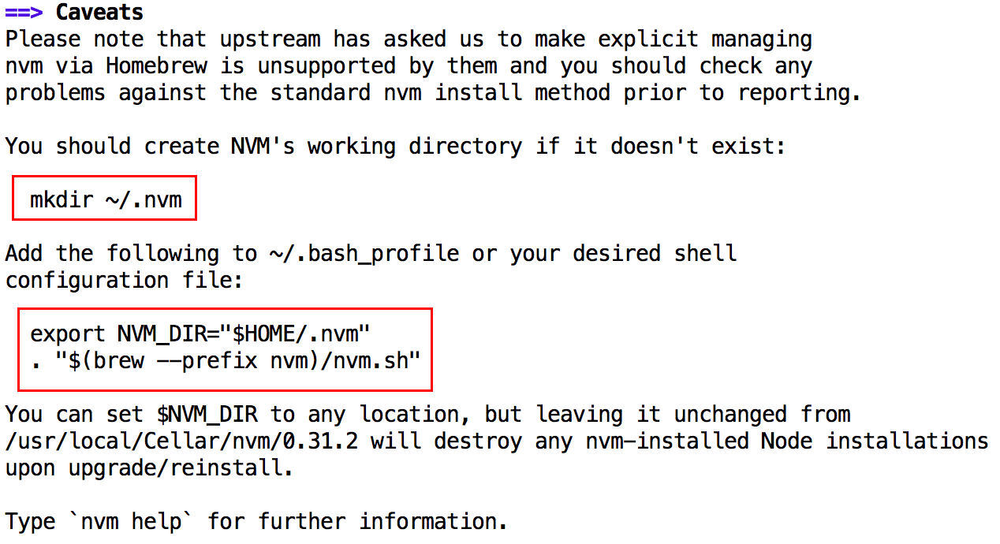
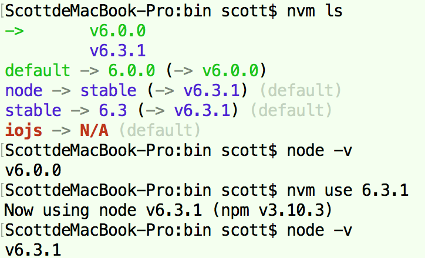
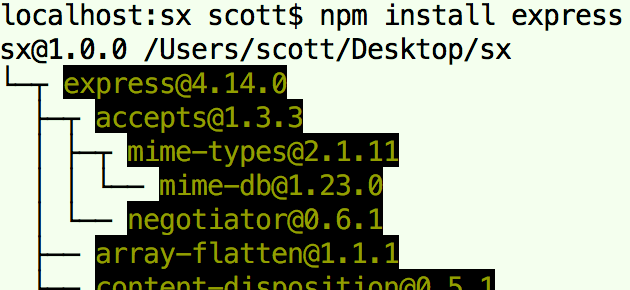
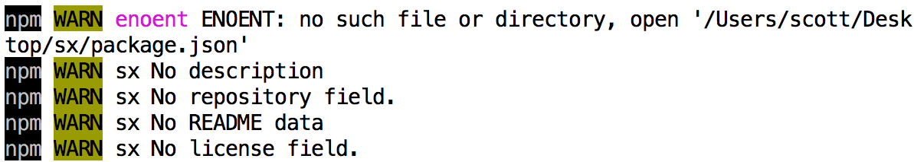

一、安装、卸载
- Node.js的安装方式有多种方式，可以通过Node.js安装包、Homebrew、nvm等；
nvm（Node Version Manager）可以很好地进行Node.js多版本管理；在这里使用nvm进行安装Node.js
第1步：安装nvm（安装方式也有多种，这里使用brew）；
brew install nvm
- a. 创建目录
mkdir ~/.nvm； - b. 在~/.bash_profil文件中添加
export NVM_DIR="$HOME/.nvm" . "$(brew --prefix nvm)/nvm.sh"，保存后，执行source ~/.bash_profile应用配置；否则无法执行nvm命令；
- a. 创建目录
第2步：使用nvm安装Node.js（默认会自动安装一些必要的模块，如npm等）；
通过nvm安装Node.js，卸载也需要通过nvm进行卸载；若手动直接安装Node.js则需要手动卸载（相关命令如下）;
手动直接安装，node命令被自动安装在/usr/local/bin/node/目录中，npm命令在/usr/local/lib/node_modules/npm/目录中；
sudo rm /usr/local/bin/node # 删除node sudo rm -rf /usr/local/lib/node_modules # 删除全局node_modules cd /usr/local/bin && ls -l | grep "../lib/node_modules/" | awk '{print $9}'| xargs rm # 删除node_modules注册的软链接 sudo rm /var/db/receipts/org.nodejs.* 最后删除~/.npm、~/.npmrc等文件；
二、nvm
nvm是Node.js多版本管理工具，类似于Python的pyenv；
nvm ls # 查看本地安装及使用的node版本 nvm ls-remote # 查看远程可以安装的node版本 nvm install stable # 安装最新稳定版node nvm install <VERSION> # 安装指定版本的node，例如nvm install 6.0.0 nvm uninstall <VERSION> # 卸载指定的node版本，例如nvm install 6.0.0 # 注意：正在使用的版本无法卸载； nvm use <VERSION> # 切换到某个版本node，例如nvm use 6.0.0 nvm alias default <VERSION> # 修改node的默认版本，例如nvm alias default 6.3.1 nvm which <VERSION> # 查看指定版本node的安装路径
三、nmp模块
- NPM（node package manager）用于管理Node.js的模块，比如安装、卸载、更新、查看、搜索、发布等，相当于Python的pip；
Node.js的模块的安装分两种：
- a. 本地安装：模块会被安装到当前目录下的node_modules目录中，只能在当前目录下使用；
- b. 全局安装：模块会被安装到Node.js的lib/node_modules中，可以在所有目录下使用；
npm <list | ls> [-g] # 查看本地（全局）已安装模块（以层级关系显示所依赖的模块） npm ls --depth=0 # 查看本地已安装模块（只显示顶层的安装模块） npm outdated [-g] [<PACKAGE>] # 查看本地（全局）的某个或所有模块是否为最新版本 npm install # 根据当前目录中的package.json文件声明的依赖模块进行安装 # 本地（全局）安装(某个版本的)模块，例如npm install -g express@4.0 npm install [-g] <PACKAGE>[@版本号] # 本地安装模块，并且在package.json中添加该模块到依赖中，这样就不用提交node_modules文件夹 npm install <PACKAGE> --save npm uninstall [-g] <PACKAGE> # 删除本地（全局）模块，并且删除依赖（Ruby/Gem不删除） npm update [-g] [PACKAGE] # 更新本地（全局）的某个或所有模块 npm <show | info> <PACKAGE> [字段名] # 查看模块详情（不论是否安装），例如npm show hexo、npm show hexo dependencies npm search <PACKAGE> # 搜索某个模块（不建议使用）第一行的路径为安装路径，@前面的为模块的name，@后面的数字为模块的版本号，下面的模块为其所依赖的模块；

npm的本地安装路径问题：
http://www.zhihu.com/question/33302274/- npm会从当前目录往父目录找，找到哪个目录有node_modules文件夹就认为这才是真正的项目目录，模块被安装到那里；
- 需要保证从当前的目录开始一直到根目录都没有node_modules文件夹，npm才会“正常”地把模块安装到到当前目录下的node_modules文件夹中（没有则创建）；
执行npm install或uninstall等操作时，需要当前目录中有package.json文件（用于管理项目的依赖项、元数据）；一般情况下，本地安装是没有该文件，需要手动创建，否则会报警告
npm WARN ENOENT ENOENT: no such file or directory, open...package.json；消除警告，有两种方式解决：
a. 使用
npm init引导模式输入相关数据初始化一个；b. 使用
npm init -y直接生成相关数据，但还会报少量警告（自动生成的数据不全）；c. 使用npm-autoinit（自动生成插件）并配置运行npm指令时执行自动生成命令； 但是使用nvm进行多版本Node.js切换时会报缺少相关文件错误，这是因为不同版本Node.js的npm配置文件都是同一个（~/.npmrc），而该插件只安装在某个版本Node.js上；解决办法是在切换到的Node.js版本上也安装该插件；
npm install -g npm-autoinit # 安装自动生成插件 npm config set onload-script npm-autoinit/autoinit # 运行npm指令时执行自动生成命令
npm相关配置命令
npm config <list | ls> [-l] # 查看所有配置信息 npm [config] set XXX # 设置相关配置（config关键字可省略） # 也可以直接修改用户目录下.npmrc文件； # proxy相关 npm [congfig] set proxy=http://www.abc.com:8080/ npm [config] get proxy # 查看proxy npm config delete proxy # 删除proxy（config关键字不可省略） # 也可以在install命令后加--registry参数临时设置代理， # 如npm install express --registry=http://registry.npm.taobao.orgnpm发布包相关命令
npm adduser # 注册registry帐号 npm login # 登录 mpm publish # 发布项目
四、n模块
- n模块是一个Node.js多版本管理工具，类似于nvm；但是强烈建议不使用n模块进行多版本管理；
nvm与n模块比较：
- a. nvm是一个独立于Node.js/npm的外部shell脚本；n模块是一个Node.js全局的模块，需要使用npm全局安装；
- b. 使用nvm安装的Node.js，npm安装的模块路径为
/Users/USERNAE/.nvm/versions/node/VERSION/lib/node_modules；使用n安装（或直接安装）的Node.js，npm安装的模块路径为/usr/local/lib/node_modules，Node.js被安装在/usr/local/lib/，； - c.使用n切换不同版本的Node.js，会使用相同的全局npm目录，无法根据不同的Node.js版本使用不同的全局模块；
npm install -g n # 安装n（必须全局安装，否则无法在终端中执行n命令） n # 查看当前通过n安装的Node版本 n stable # 安装最新稳定版Node n <VERSION> # 安装指定的Node版本 n use <VERSION> # 切换到某个Node版本 n rm <VERSION> # 卸载某个Node版本
五、package.json
- package.json文件用于管理项目的依赖项、元数据；该文件有以下相关必填和非必填字段，下面只列举部分：
- 1). name：package的名字（不能含有关键字或特殊字符，如node、js等；若需要发布就要唯一）；
- 2). version：package的版本；
- 3). dependencies：package的依赖模块；
- 4). devDependencies：package的开发依赖模块；
- 5). main：模块入口文件的相对路径；
- 6). engines：依赖的Node.js版本；
- 版本号格式：
主版本号(Major).副版本号(Minor).补丁版本号(Patch)，例如1.2.3； - ~表示使用最接近的版本，空格、x、*表示任意版本；
- ~1表示1.0.0~1.1.0之间的版本；
- ~1.1表示1.1.0~1.2.0之间的版本；
- ~1.1.1表示1.1.1~1.2.0之间的版本；
六、HTTP Demo
创建一个example.js文件写入以下内容并运行（
node example.js），打开浏览器进行访问；http = require('http'); http.createServer(function(req, res) { res.writeHead(200, {'Content-Type': 'text/plain'}); res.end('Hello World!\n'); }).listen(8080, '127.0.0.1'); console.log('Server running at http://127.0.0.1:8080/');